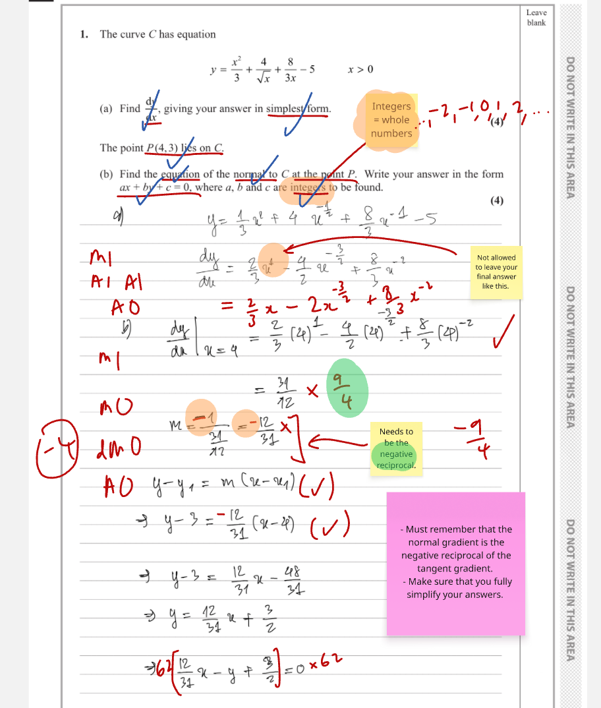

The curve $C$ has equation
$$y=\frac{x^2}{3}+\frac{4}{\sqrt{x}}+\frac{8}{3x}-5\qquad x>0$$
(a) Find $\dfrac{dy}{dx}$, giving your answer in simplest form. (4)
The point $P\,(4,3)$ lies on $C$.
(b) Find the equation of the normal to $C$ at the point $P$. Write your answer in the form $ax+by+c=0$, where $a$, $b$ and $c$ are integers to be found. (4)
[8 marks: (a) 4, (b) 4]
Strategy and why. Differentiation is easiest after rewriting every denominator as a negative power. This prevents the square-root and reciprocal terms from being treated as constants and makes the power rule apply term by term.
Formula first. For $x^n$, $\dfrac{d}{dx}(x^n)=nx^{n-1}$. Rewrite
$$y=\frac13x^2+4x^{-1/2}+\frac83x^{-1}-5.$$Differentiate each term, showing the coefficient and new index:
$$\frac{dy}{dx}=\frac13(2x)+4\left(-\frac12\right)x^{-3/2}+\frac83(-1)x^{-2}-0.$$Therefore
$$\boxed{\frac{dy}{dx}=\frac23x-2x^{-3/2}-\frac83x^{-2}}.$$Equivalently, $\dfrac23x-\dfrac{2}{x^{3/2}}-\dfrac{8}{3x^2}$ is exact and simple. The domain $x>0$ makes $x^{3/2}$ unambiguous in the real numbers.
Check. Differentiating $4/\sqrt{x}$ should give a negative value because that term decreases as $x$ increases; differentiating $8/(3x)$ should also be negative. Both signs agree. Transfer trigger: whenever radicals or variables occur in denominators, rewrite as powers before differentiating, then simplify only after every coefficient-index product is visible.
Exam presentation. Keep the four differentiated terms on one line before simplifying. This lets an examiner see the power-rule method even if a later arithmetic slip occurs. The final derivative should contain no differentiated constant, and every new exponent should be exactly one less than its source exponent. Preserve exact fractional indices rather than converting them to rounded decimals.
Strategy and why. The normal is perpendicular to the tangent. First evaluate the derivative at $x=4$, then take the negative reciprocal, and finally use the point-line formula through $P(4,3)$.
Formula first. Perpendicular non-vertical gradients satisfy $m_{\mathrm T}m_{\mathrm N}=-1$. Using part (a),
$$m_{\mathrm T}=\left[\frac23x-2x^{-3/2}-\frac83x^{-2}\right]_{x=4}.$$Evaluate every power exactly: $4^{-3/2}=1/(\sqrt4)^3=1/8$ and $4^{-2}=1/16$. Hence
$$m_{\mathrm T}=\frac83-2\left(\frac18\right)-\frac83\left(\frac1{16}\right)=\frac83-\frac14-\frac16=\frac{32-3-2}{12}=\frac94.$$So
$$m_{\mathrm N}=-\frac{1}{9/4}=-\frac49.$$Use $y-y_1=m(x-x_1)$:
$$y-3=-\frac49(x-4).$$Multiply by $9$ and collect everything on the left:
$$9y-27=-4x+16\quad\Longrightarrow\quad\boxed{4x+9y-43=0}.$$Check. Substituting $(4,3)$ gives $16+27-43=0$, and $(9/4)(-4/9)=-1$. Both the point and perpendicularity conditions pass. Transfer trigger: for a normal, always write the tangent gradient first, explicitly apply $-1/m$, and check both the point and gradient product.
Marked lesson evidence.

Exam presentation. Do not round the gradient: the requested integer-coefficient line depends on retaining $9/4$ exactly. Point-gradient form protects the known point, and multiplying by the denominator before expanding is the cleanest route to integers with no accidental fractions. Label tangent and normal gradients separately so the negative-reciprocal change is unmistakable.